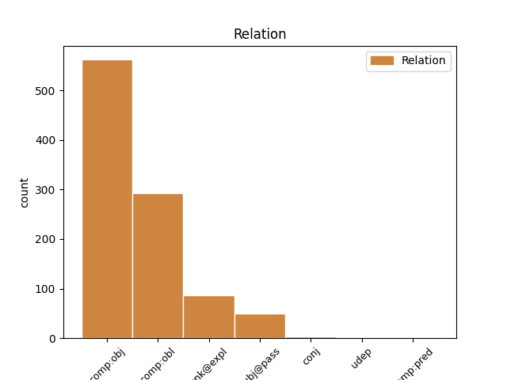
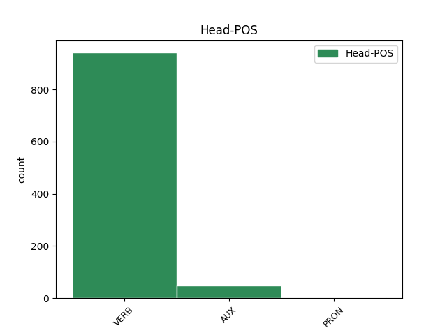
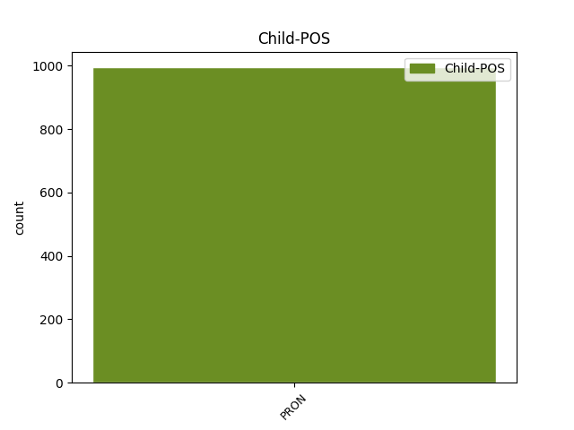

Distribution of features within this leaf



Agreement Rules sorted by frequency.
- When the dependent token is the direct object complements(comp:obj) of the head token, and the dependent token is PRON.
1 Изборите _ _ _ _ 0 _ _ _
2 в _ _ _ _ 0 _ _ _
3 провинцията _ _ _ _ 0 _ _ _
4 бяха _ _ _ _ 0 _ _ _
5 за _ _ _ _ 0 _ _ _
6 управлението _ _ _ _ 0 _ _ _
7 на _ _ _ _ 0 _ _ _
8 30-те _ _ _ _ 0 _ _ _
9 общини _ _ _ _ 0 _ _ _
10 , _ _ _ _ 0 _ _ _
11 но _ _ _ _ 0 _ _ _
12 косовските _ _ _ _ 0 _ _ _
13 албанци _ _ _ _ 0 _ _ _
14 ги аз PRON Ppetap3 Case=Acc|Number=Plur|Person=3|PronType=Prs 15 comp:obj _ _
15 приеха приема VERB Vpptf-o3p Aspect=Perf|Mood=Ind|Number=Plur|Person=3|Tense=Past|VerbForm=Fin|Voice=Act 0 _ _ _
16 като _ _ _ _ 0 _ _ _
17 референдум _ _ _ _ 0 _ _ _
18 за _ _ _ _ 0 _ _ _
19 независимост _ _ _ _ 0 _ _ _
20 . _ _ _ _ 0 _ _ _
1 Сигурно _ _ _ _ 0 _ _ _
2 затова _ _ _ _ 0 _ _ _
3 и _ _ _ _ 0 _ _ _
4 Ал _ _ _ _ 0 _ _ _
5 Гор _ _ _ _ 0 _ _ _
6 не _ _ _ _ 0 _ _ _
7 желае _ _ _ _ 0 _ _ _
8 Клинтън _ _ _ _ 0 _ _ _
9 да _ _ _ _ 0 _ _ _
10 му аз PRON Ppetds3m Case=Dat|Gender=Masc|Number=Sing|Person=3|PronType=Prs 11 comp:obl _ _
11 помага помагам VERB Vpiif-r3s Aspect=Imp|Mood=Ind|Number=Sing|Person=3|Tense=Pres|VerbForm=Fin|Voice=Act 0 _ _ _
12 в _ _ _ _ 0 _ _ _
13 предизборната _ _ _ _ 0 _ _ _
14 борба _ _ _ _ 0 _ _ _
15 и _ _ _ _ 0 _ _ _
16 се _ _ _ _ 0 _ _ _
17 държи _ _ _ _ 0 _ _ _
18 настрани _ _ _ _ 0 _ _ _
19 от _ _ _ _ 0 _ _ _
20 него _ _ _ _ 0 _ _ _
21 . _ _ _ _ 0 _ _ _
1 Президентът _ _ _ _ 0 _ _ _
2 , _ _ _ _ 0 _ _ _
3 който _ _ _ _ 0 _ _ _
4 именно _ _ _ _ 0 _ _ _
5 сега _ _ _ _ 0 _ _ _
6 активно _ _ _ _ 0 _ _ _
7 събира _ _ _ _ 0 _ _ _
8 милиони _ _ _ _ 0 _ _ _
9 долари _ _ _ _ 0 _ _ _
10 за _ _ _ _ 0 _ _ _
11 нейната _ _ _ _ 0 _ _ _
12 кампания _ _ _ _ 0 _ _ _
13 и _ _ _ _ 0 _ _ _
14 даже _ _ _ _ 0 _ _ _
15 вече _ _ _ _ 0 _ _ _
16 твърди _ _ _ _ 0 _ _ _
17 , _ _ _ _ 0 _ _ _
18 че _ _ _ _ 0 _ _ _
19 " _ _ _ _ 0 _ _ _
20 чува _ _ _ _ 0 _ _ _
21 фанфарите _ _ _ _ 0 _ _ _
22 на _ _ _ _ 0 _ _ _
23 победата _ _ _ _ 0 _ _ _
24 " _ _ _ _ 0 _ _ _
25 , _ _ _ _ 0 _ _ _
26 не _ _ _ _ 0 _ _ _
27 й аз PRON Ppetds3f Case=Dat|Gender=Fem|Number=Sing|Person=3|PronType=Prs 28 unk@expl _ _
28 е съм AUX Vxitf-r3s Aspect=Imp|Mood=Ind|Number=Sing|Person=3|Tense=Pres|VerbForm=Fin|Voice=Act 0 _ _ _
29 съобщил _ _ _ _ 0 _ _ _
30 за _ _ _ _ 0 _ _ _
31 подписването _ _ _ _ 0 _ _ _
32 на _ _ _ _ 0 _ _ _
33 толкова _ _ _ _ 0 _ _ _
34 важен _ _ _ _ 0 _ _ _
35 закон _ _ _ _ 0 _ _ _
36 ? _ _ _ _ 0 _ _ _
1 Той аз PRON Ppe-os3m Case=Nom|Gender=Masc|Number=Sing|Person=3|PronType=Prs 2 subj@pass _ _
2 бе съм AUX Vxitf-t3s Aspect=Imp|Mood=Ind|Number=Sing|Person=3|Tense=Past|VerbForm=Fin|Voice=Act 0 _ _ _
3 прекъсван _ _ _ _ 0 _ _ _
4 многократно _ _ _ _ 0 _ _ _
5 от _ _ _ _ 0 _ _ _
6 гневни _ _ _ _ 0 _ _ _
7 реплики _ _ _ _ 0 _ _ _
8 на _ _ _ _ 0 _ _ _
9 депутатите _ _ _ _ 0 _ _ _
10 . _ _ _ _ 0 _ _ _
1 Той аз PRON Ppe-os3m Case=Nom|Gender=Masc|Number=Sing|Person=3|PronType=Prs 0 _ _ _
2 или _ _ _ _ 0 _ _ _
3 тя аз PRON Ppe-os3f Case=Nom|Gender=Fem|Number=Sing|Person=3|PronType=Prs 1 conj _ _
4 вероятно _ _ _ _ 0 _ _ _
5 със _ _ _ _ 0 _ _ _
6 задоволство _ _ _ _ 0 _ _ _
7 ще _ _ _ _ 0 _ _ _
8 отбележат _ _ _ _ 0 _ _ _
9 напредъка _ _ _ _ 0 _ _ _
10 . _ _ _ _ 0 _ _ _
1 Иначе _ _ _ _ 0 _ _ _
2 ти _ _ _ _ 0 _ _ _
3 си съм AUX Vxitf-r2s Aspect=Imp|Mood=Ind|Number=Sing|Person=2|Tense=Pres|VerbForm=Fin|Voice=Act 0 _ _ _
4 ти аз PRON Ppe-os2 Case=Nom|Number=Sing|Person=2|PronType=Prs 3 comp:pred _ SpaceAfter=No
5 , _ _ _ _ 0 _ _ _
6 няма _ _ _ _ 0 _ _ _
7 съмнение _ _ _ _ 0 _ _ _
8 . _ _ _ _ 0 _ _ _
Disagree Examples:
1 Трябва _ _ _ _ 0 _ _ _
2 ли _ _ _ _ 0 _ _ _
3 да _ _ _ _ 0 _ _ _
4 му аз PRON Ppetds3m Case=Dat|Gender=Masc|Number=Sing|Person=3|PronType=Prs 5 comp:obl _ _
5 кажа кажа VERB Vpptf-r1s Aspect=Perf|Mood=Ind|Number=Sing|Person=1|Tense=Pres|VerbForm=Fin|Voice=Act 0 _ _ _
6 ? _ _ _ _ 0 _ _ _
1 Купувам купувам VERB Vpitf-r1s Aspect=Imp|Mood=Ind|Number=Sing|Person=1|Tense=Pres|VerbForm=Fin|Voice=Act 0 _ _ _
2 му аз PRON Ppetds3m Case=Dat|Gender=Masc|Number=Sing|Person=3|PronType=Prs 1 comp:obl _ _
3 къща _ _ _ _ 0 _ _ _
4 . _ _ _ _ 0 _ _ _
1 Той _ _ _ _ 0 _ _ _
2 бръква _ _ _ _ 0 _ _ _
3 под _ _ _ _ 0 _ _ _
4 възглавницата _ _ _ _ 0 _ _ _
5 и _ _ _ _ 0 _ _ _
6 ми аз PRON Ppetds1 Case=Dat|Number=Sing|Person=1|PronType=Prs 7 comp:obl _ _
7 подава подавам-(се) VERB Vpitf-r3s Aspect=Imp|Mood=Ind|Number=Sing|Person=3|Tense=Pres|VerbForm=Fin|Voice=Act 0 _ _ _
8 прост _ _ _ _ 0 _ _ _
9 син _ _ _ _ 0 _ _ _
10 плик _ _ _ _ 0 _ _ _
11 . _ _ _ _ 0 _ _ _
1 На _ _ _ _ 0 _ _ _
2 трапезата _ _ _ _ 0 _ _ _
3 ни аз PRON Ppetdp1 Case=Dat|Number=Plur|Person=1|PronType=Prs 4 comp:obl _ _
4 поднесоха поднеса-(се) VERB Vpptf-o3p Aspect=Perf|Mood=Ind|Number=Plur|Person=3|Tense=Past|VerbForm=Fin|Voice=Act 0 _ _ _
5 круши _ _ _ _ 0 _ _ _
6 с _ _ _ _ 0 _ _ _
7 восъчен _ _ _ _ 0 _ _ _
8 цвят _ _ _ _ 0 _ _ _
9 . _ _ _ _ 0 _ _ _
1 Сънят _ _ _ _ 0 _ _ _
2 ми аз PRON Ppetss1 Number=Sing|Person=1|PronType=Prs 3 unk@expl _ _
3 е съм AUX Vxitf-r3s Aspect=Imp|Mood=Ind|Number=Sing|Person=3|Tense=Pres|VerbForm=Fin|Voice=Act 0 _ _ _
4 най-верният _ _ _ _ 0 _ _ _
5 приятел _ _ _ _ 0 _ _ _
6 . _ _ _ _ 0 _ _ _